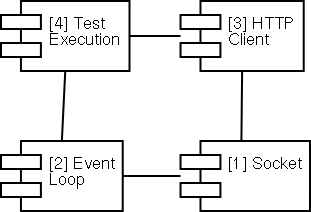

$Revision$ $Author$ $Date$
Change History
Scope
Diagram
[1] Socket
[2] Event Loop
[3] HTTP Client
[4] Test Execution
Files
$Log$ Revision 1.1 2001/03/01 22:40:10 pjohnsen Initial version
This is a description of the top level components of the OpenLoad project. This should give a good overview of the different parts.

The socket component handles the interface to the socket layer (WinSock for Win32). Sockets are used asynchronously, i.e. there are no blocking calls. This means that the socket component is implemented as a state machine.
The component provides interfaces for:
Each of this operations provide a callback at completion.
The event loop listens for incoming events from the registered sockets. Events are:
The event loop continously receives events (by calling the select function), and dispatches the arriving events to the cooresponding socket objects.
The component provides interfaces for:
The HTTP client implements the HTTP protocol on top of the socket component, i.e. it sends HTTP requests to the web server under test and receives and interpretes the HTTP responses. This is also implemented as a statemachine. The component also handles HTTP headers (request and response) and URLs.
The component provides interfaces for:
This is the main program that actually executes the test. It works by starting the requested number of simultanous HTTP requests and then entering the event loop. Every time a request completes a callback function is called which updates the statistics (increments the count of transactions, notes the response time, etc.) and each second output is generated.
sock.h sock.cpp
event_loop.h event_loop.cpp
url.h url.cpp http_headers.h http_headers.cpp http_client.h http_client.cpp
http_test.cpp